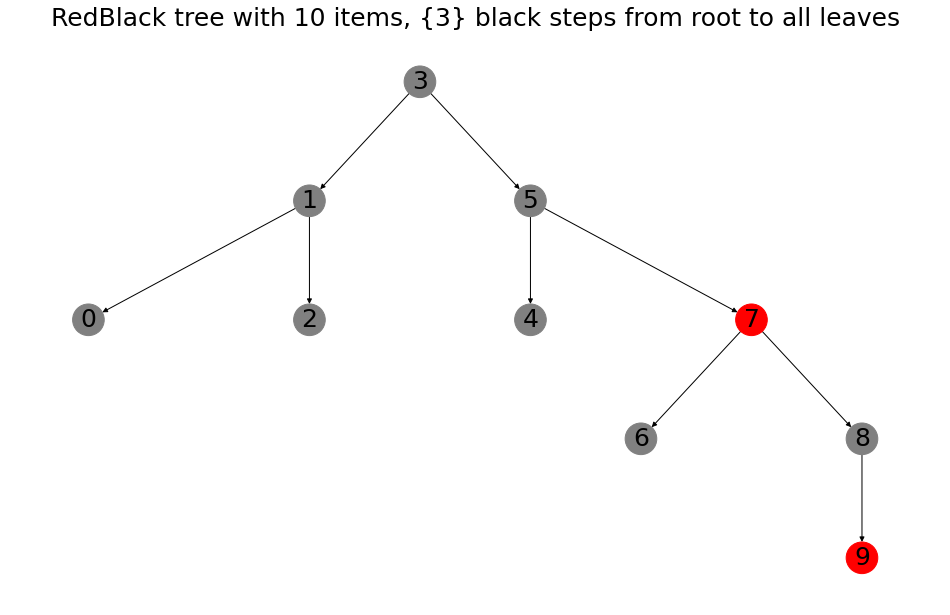

After playing around with red-black trees for some time, I’ve grown to really like them, but also hate them at the same time! I’ll explain in this blog why. To understand what a red-black tree is, we’ll first have to touch upon the concept of a binary search tree. The binary search tree is a method of ordering items that can be compared to each other. The easiest example is of course numbers (1 < 2), other object such as letters (a < b) or words (short < longerword) can also be compared.
A binary tree is very simple and I had fun making one with my six year old daughter. She came up with a list of numbers and together we added them to the tree. The root of the tree is the first item you start with. Next, to add another item you simply check if the item is smaller or larger than the root. If it’s smaller it gets stored into the left branch, if it’s larger it goes to the right branch. A node in the tree can have only one branch on each side. Therefore the tree will have to get deeper when more nodes are added. As an example, a tree with 3 layers holds a maximum of 1+2+4 = 7 nodes. Below an example, where it takes three steps to reach 5,14 and 55 and four steps to reach 62 and 66. These nodes are the edge of the tree and are called leaves.
The advantage of binary search trees is that the items are ordered. For example, you can easily lookup the minimum (just always go left from the root). But also finding an item can be very quick, which is expressed by the number of steps from the root. It makes sense, if you are interested in the left side of the tree, you no longer need to search the right side.
But think about a scenario where you insert numbers in order, ascending. The tree would only have right branches! This effectively means you are just storing a list. Now for a small tree (as the one below), that is no problem, but if you are storing a million items this way, you would have to search a million items before inserting the next number. If the tree would have been balanced, it would only take about 20 steps from the root to any leaf (1 million log base 2).
This is where red-black trees come in. They are self-balancing to solve the above problem. In a red-black tree, items are colored in two colors. You’ve guessed it, red or black. There are a couple of rules:
- The root is always black
- While going from root to any leaf, you’ll never pass two consecutive red items
- The amount of black items you pass while going to an end of the tree is the same for each leaf of the tree.
To preserve these properties insertion and removal can require certain operations, such as recoloring certain items, or rotating part of the tree. And this is where my love and hate comes in. It’s awesome to see the different shapes the tree can take while balancing. Even the root of the tree can change in the process. A couple of examples:

In the above figure, numbers 0 to 10 were inserted in order. The graph shows that the redblack tree has been rotated to now have 3 as root (no longer the 0 it started with initially). Also the paths from the root (3) to the leaves (0,2,4,6,8 and 9) all cross exactly 3 black nodes!
If we insert 50 items in order, a nice balanced tree appears
to_insert = list(range(50))
RBTree(to_insert,silent=True).draw()When we randomize the insertion order a completely different tree arises, but still it’s nicely balanced.
random.shuffle(to_insert)
RBTree(to_insert,silent=True).draw()I think this looks elegant. However, it’s known that redblack trees can be difficult to implement and indeed it’s been an absolute pain to code the algorithms, with some difficult debugging to take care of all the edge cases to make sure the code runs correctly. More detailes of all the cases you can encounter at Wikipedia. I’ve gained new appreciation for programming concepts such as unit testing, refactoring, and plain old careful reading of the specification. Seeing it work has made this project worth it!
After some reading, I’ve also come across the treap (tree-heap), which is basically using random numbers to make the tree structure as if the items would have been inserted in random order. Which will make the tree balanced with a high probablility.
To illustrate the randomness, I’ve twice made a treap with 50 items inserted in order. The resulting trees are different, which does not happen with red-black trees when the insertion order is the same. Treaps look much different then the red-black trees as well.
Treaps are much simpler to implement and outperform red-black trees on insertion, search and deletion, but due to their randomized nature are less consistent. Also red-black trees look nicer in my opinion.
That’s it, hope you enjoyed it this exploration of trees!
This page has a nice animation how red-black trees are build. Additionally, Wikipedia has more information about binary search trees, red black trees and treaps